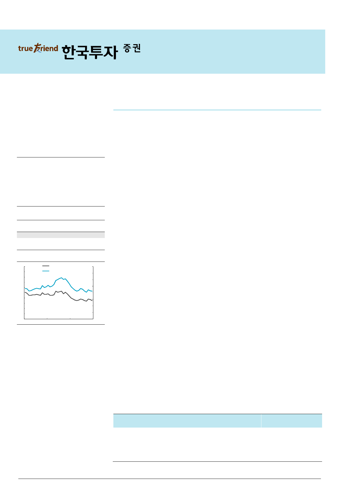

기업 Comment
2017.9.6
한국전력(015760)
매수(유지)
정책 불확실성 해소될 것
목표주가: 54,000원(유지)
Stock Data
KOSPI(9/5)
2,327
주가(9/5)
42,350
시가총액(십억원)
27,187
발행주식수(백만)
642
52주 최고/최저가(원)
60,000/40,350
일평균거래대금(6개월, 백만원)
66,660
유동주식비율/외국인지분율(%)
48.9/32.2
주요주주(%) 한국산업은행 외 2 인
51.1
국민연금
6.5
주가상승률
절대주가(%)
상대주가(%p)
1개월
(4.7)
(1.9)
6개월
(1.4)
(13.3)
12개월
(26.0)
(38.9)
12MF PBR 추이
1.0
(배)
0.9
12MF PBR (좌)
한국전력 주가 (우)
0.8
0.7
0.6
0.5
0.4
0.3
0.2
0.1
0.0
Oct-14
Oct-15
Oct-16
자료: WISEfn 컨센서스
(원)
80,000
70,000
60,000
50,000
40,000
30,000
20,000
10,000
0
10월 20일 공론화위 결정으로 ‘탈원전’ 불확실성 해소
신정부 들어 신규 원전/석탄발전 프로젝트 진행에 불확실성이 커졌다. 원전의 경우 공정
률 약 30%인 신고리 5, 6호기 건설 진행 여부가 가장 큰 이슈이다. 신고리 5, 6호기의 운
명을 결정할 공론화위원회(공론화위)는 500명의 시민참여단 구성을 9월 13일까지 확정할
계획이며, 이후 12번의 토론회와 4차례의 설문조사를 한 달간 진행할 예정이다. 최종 권
고안은 10월 20일 정부에 제출될 계획이며, 정부는 이를 수용해 최종 결정을 내릴 것이다.
신고리 5, 6호기 건설 중단 확정시 발주처인 한국수력원자력이 우선적으로 부담할 비용은
알려진 대로 약 2.6조원이다. 하지만 지난 7월 산업부 장관이 언급한 바와 같이, 신고리
5, 6호기 건설 영구중단에 따른 모든 비용을 정부가 보전해줄 가능성이 높다. 착공하지 않
은 신한울 3, 4호기와 천지 1, 2호기는 진행되기 어려울 것으로 보이나 언론을 통해 부각
된 바 있어 특별한 변수는 아니다. 즉 가장 큰 변수는 신고리 5, 6호기 진행여부이며, 10
월 20일을 기점으로 지난 6개월간 지속됐던 ‘탈원전’ 불확실성은 상당부분 해소될 것이다.
크게 늘어난 기저발전, 한전에게 유리한 상황 펼쳐져
작년 하반기부터 신규 기저발전(원전+석탄발전) 가동으로 우리나라 기저발전 용량(7월 기
준)은 전년대비 15.3% 늘었다. 기저발전 용량이 크게 늘어난 만큼 계통한계가격(SMP)의
발전원별 결정비율에도 큰 변화가 있었다. 7월 SMP의 석탄발전 결정비율은 15.5%로
2011년 이후 가장 높았다. 작년 석탄발전의 SMP 결정비율이 2.5%임을 감안하면 급격한
상승이다. 참고로 현재 석탄발전단가는 kWh당 50~60원대로 LNG발전단가(kWh당
80~90원대)보다 낮아 석탄발전이 SMP를 결정한 시간대가 많아질수록 평균 SMP는 내려
간다. 낮은 원전 가동률(69%)을 고려하면, 가동률이 회복될 4분기에는 석탄발전의 SMP
결정비율은 더욱 높아질 것이다. 이에 따라 유가(LNG 발전단가에 연동)가 빠르게 상승해
도 SMP는 크게 오르지 않는 비동조화 현상이 나타날 것이다. 한전은 구입전력비 단가(P)
가 낮아져 긍정적이나, 전력판매단가가 낮아질 민자발전사들에게는 좋지 않은 상황이다.
강승균 3276-6164
seungkyun.kang@truefriend.com
정책 불확실성 해소 임박, 시장의 관심이 높아질 것
석탄발전 LNG발전 전환 이슈(2P), 환경/안전성 강화 정책, 전기요금 현실화 등 예측이
어려운 변수들이 남아있는 것이 사실이다. 그럼에도 10월 신고리 5, 6호기 진행여부 결정
과 8차 전력수급계획 수립이 마무리 된다면 주요 불확실성이 해소돼, 한전의 저평가 메리
트(2018F PBR 0.3배)가 부각될 것이다. 한편 원전 가동률 회복과 발전믹스 개선으로 이
익은 계속 늘어날 가능성이 크다. 올해 예상 배당수익률 3.1%로 배당 측면에서도 시장의
관심은 점차 높아질 것이다. 목표주가 54,000원과 ‘매수’ 투자의견을 유지한다.
매출액 영업이익 순이익
EPS 증감률 EBITDA PER EV/EBITDA PBR ROE DY
(십억원) (십억원) (십억원)
(원)
(%) (십억원)
(x)
2015A 58,958 11,347 13,289 20,701 382.5 19,688 2.4
2016A 60,190 12,002 7,049 10,980 (47.0) 20,963 4.0
2017F 59,337 7,636 4,204 6,549 (40.4) 17,214 6.5
2018F 60,850 9,118 5,293 8,246 25.9 18,762 5.2
2019F 61,393 9,188 5,327 8,298
0.6 18,855 5.1
(x) (x) (%) (%)
4.3 0.5 22.1 6.2
3.7 0.4 10.2 4.5
4.2 0.4 5.7 3.1
3.7 0.3 6.9 4.7
3.5 0.3 6.6 4.7
주: 순이익, EPS 등은 지배주주지분 기준